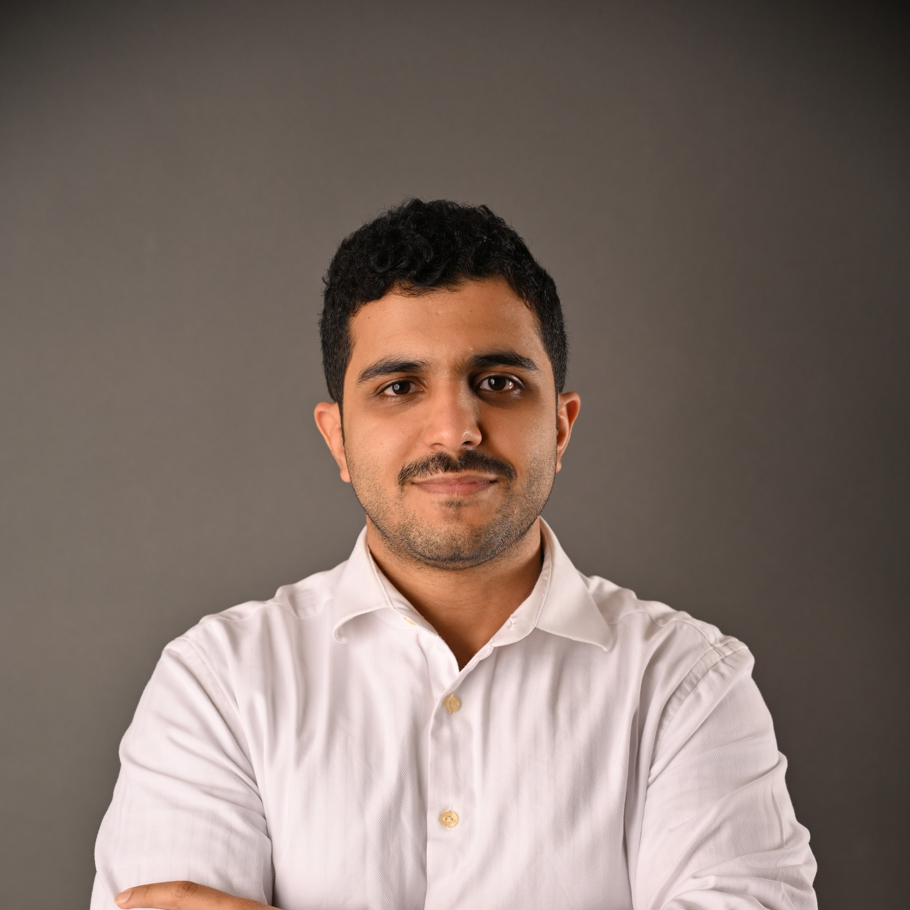

Abdullah Al-Nafisah
R&D Engineer, NTIS · M.Sc. ECE, KAUST · Saudi Arabia
About
I am an R&D engineer at The National Company of Telecommunications and Information Security (NTIS) in Saudi Arabia (Oct 2020 – present), where I develop direct RF sampling architectures on AMD/Xilinx RFSoC platforms, optical communication systems on MPSoC, and FPGA-based (VHDL/Verilog) controllers with custom UART, I²C, and SPI drivers.
I hold an M.Sc. in Electrical and Computer Engineering from King Abdullah University of Science and Technology (KAUST) (GPA: 3.83/4.0, 2022–2024), where my thesis — Turbo-Equalized FTN-Inspired Modulations (supervised by Dr. T. Al-Naffouri and Dr. M. Siala) — integrated FTN-inspired modulations with turbo equalization and LDPC decoding, achieving BER performance superior to state-of-the-art results. I attended the FLUXONICS Summer School on Superconducting Electronics in Corsica, France (Summer 2024).
I received a B.Sc. with Double Major in Electrical Engineering and Physics from King Fahd University of Petroleum and Minerals (KFUPM) (GPA: 3.76/4.0, 1st Honors, 2013–2019), and completed an exchange semester at the Georgia Institute of Technology (Fall 2016, GPA: 3.5/4.0). Undergraduate research (supervised by Dr. M. Abuelma'atti) produced a memristor-based chaotic masking system and a novel tunable CFOA comb filter. Earlier internships include a Mitacs Globalink Research Internship at Western University (Summer 2018, supervised by Dr. S. Valluri) and a KAUST Visiting Student Research Program (VSRP) internship (Summer 2017, supervised by Dr. H. Fariborzi), where I modeled All-Spin Logic devices using Landau–Lifshitz–Gilbert equations in Cadence/Verilog-A.
Research Interests
- Faster-than-Nyquist (FTN) signaling and spectrally efficient modulation
- Turbo equalization and iterative detection/decoding (EXIT chart analysis, BCJR/SISO algorithms)
- Channel coding, coded modulation, and information theory
- Nonlinear circuit dynamics: chaotic oscillators, memristive systems, and physical-layer security
- Analog and mixed-signal circuit design: active filters, CFOA-based topologies
- FPGA-based signal processing and embedded systems
Publications
-
Synchronization of Two Transistor-Based Chaotic Oscillators
-
A New CFOA-Based Shadow Analog Comb Filter
-
Synchronization of Memristor-Based Chaotic Oscillator
-
A Memristor-Based Chaotic Masking Scheme for Secure Communications
Selected Projects
- Real-Time FPGA-Based Indoor Localization
- FPGA-Based Graphics Control System
- Low-Cost Wireless Seismic Data Acquisition System
- Chaotic Oscillators for Secure Analog Communications
- Tunable CFOA-Based Shadow Comb Filter
Conference posters and full publication archive are on the Archive page.
Curriculum Vitae
Contact
abdullah.y.alnafisah@gmail.com · +966-56-703-4422 · LinkedIn